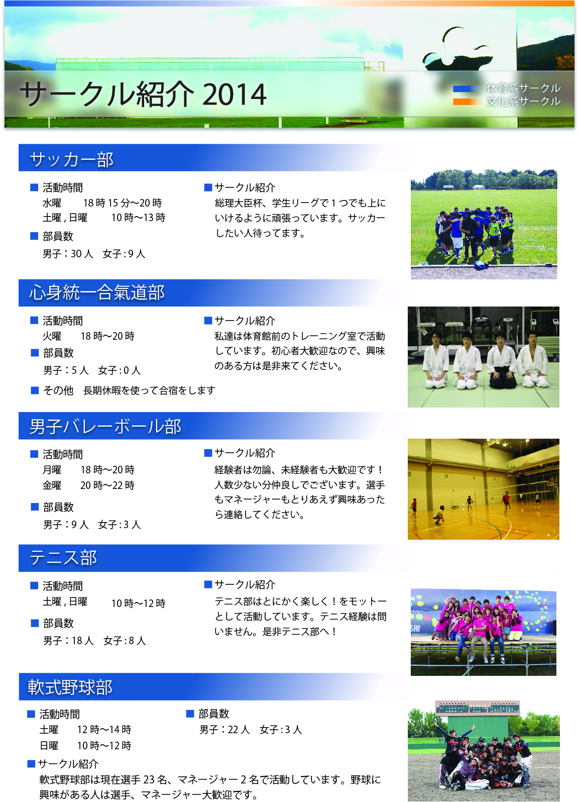

学生委員会
学生委員会に所属し、学生支援活動を行っています。
入学式前に新入生歓迎会を開催し、新入生の和を広げる。新入生歓迎冊子を作成し、次年度に入学する新入生へ公式パンフレットとは違う視点から新入生に役立つような情報を伝えるなど、他にも様々な活動を行ってきました。
グループ活動
担当箇所:撮影/編集/記事デザイン
使用ツール:Illustrator/Photoshop
期間:2013/04~
新入生歓迎冊子の制作
特に新入生歓迎冊子では、メンバーそれぞれがページ担当をし、連携しながら制作しました。
私は主に冊子に使用するほぼ全ての写真の撮影・加工、複数ページの制作を行いました。
2年目は、表紙に使用する写真の撮影も行いました。新入生が未来へ新しい1歩を踏み出すようなイメージで撮影しました。
